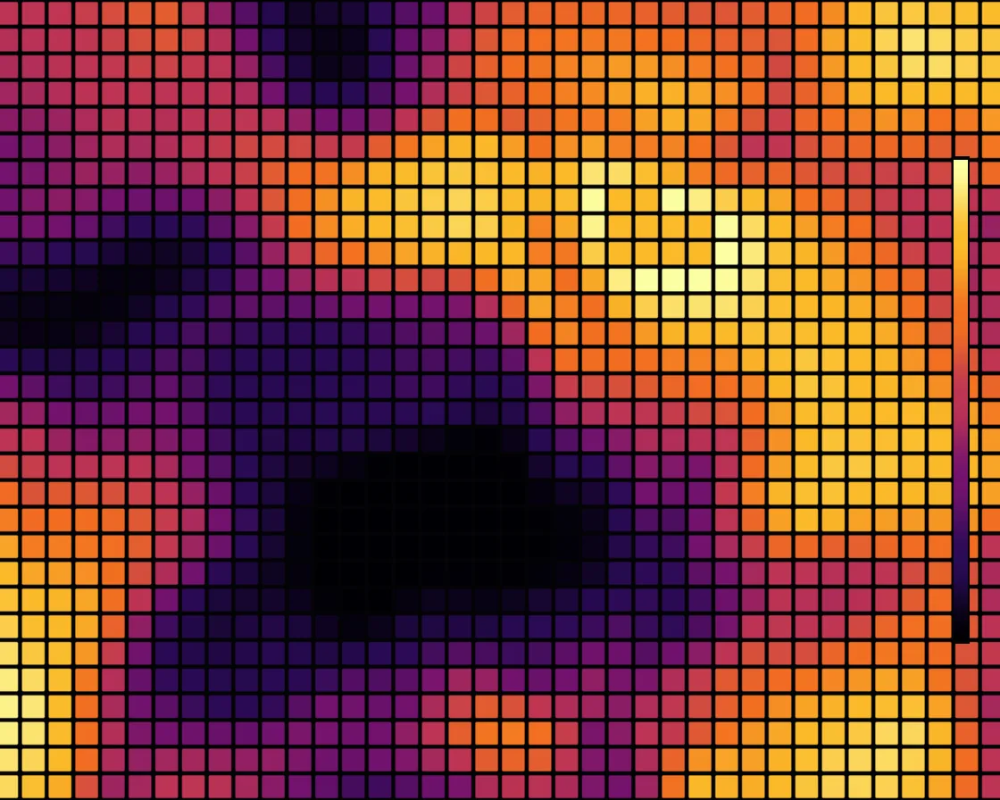

Heatmap
Heatmap is a WebGL effect: a drifting field, sampled per cell, through a perceptual heat palette. One plain JavaScript file with no dependencies; add it with npx motion-library add heatmap.

Open it live, tune it and copy the code
What is Heatmap?
A grid of rounded cells glows from black through crimson to pale yellow as hot spots drift. The pointer leaves heat that spreads and slowly cools.
How does Heatmap work?
Domain-warped noise plus wandering Gaussians is sampled at each cell’s centre and mapped through an inferno-like palette whose brightness rises evenly; cells are SDF rounded squares.
How do I add Heatmap to my website?
- In your project folder, run
npx motion-library add heatmap. It writesanimations/heatmap.js. Needs Node 18 or newer. - Import it and call it with a container element that has a size:
import fx from './animations/heatmap.js'; const stop = fx(document.querySelector('#hero')); - Call
stop()to clean up, for example when a component unmounts.
Every setting below is also a flag, so you can install it already tuned: npx motion-library add heatmap --rows 60.
What settings can I tweak?
| Setting | Flag | Default | Range | Step |
|---|---|---|---|---|
| Rows | --rows | 30 | 8 to 60 | 1 |
| Field scale | --scale | 1.2 | 0.4 to 3 | 0.05 |
| Speed | --speed | 1 | 0 to 3 | 0.05 |
Specifications
- Renderer
- WebGL
- Category
- Generative & math
- Dependencies
- None
- File size
- 8.3 KB, unminified
- Interactive
- Yes: it responds to the pointer
- Reduced motion
- Respects prefers-reduced-motion
- Licence
- MIT-0: use it anywhere, no credit needed
Source code
// Heatmap: a slowly drifting scalar field (domain-warped noise plus a few wandering hot spots) sampled once per
// cell of a matrix and coloured through a perceptual heat palette that climbs from near-black through violet,
// crimson and orange to pale yellow, in the spirit of inferno: brightness rises steadily along it, so equal steps
// in the data look like equal steps in colour, and it still reads in greyscale. Each cell is a rounded square with
// a hairline gutter, drawn from its own centre value, so the field reads as data rather than as a picture; the
// value eases between frames because the field itself drifts smoothly. A slim colour bar keys the palette.
// The pointer (or an idle ghost) leaves heat behind: each drop spreads as the heat equation's widening Gaussian and cools.
const PARAMS = { rows: 30, scale: 1.2, speed: 1 };
export default function (stage) {
const canvas = document.createElement('canvas');
canvas.style.cssText = 'position:absolute;inset:0;width:100%;height:100%;display:block';
stage.append(canvas);
const gl = canvas.getContext('webgl2', { antialias: false });
if (!gl) { stage.textContent = 'This needs WebGL2.'; return () => canvas.remove(); }
const reduce = matchMedia('(prefers-reduced-motion: reduce)').matches;
const vs = `#version 300 es
in vec2 p; void main() { gl_Position = vec4(p, 0, 1); }`;
const fs = `#version 300 es
precision highp float; out vec4 o;
uniform vec2 R, M; uniform float T, D, MA, u_rows, u_scale, u_speed;
uniform vec3 HS[40]; // heat drops: x, y (stage units) and age in seconds (< 0: none)
float hash(vec2 p) { return fract(sin(dot(p, vec2(127.1, 311.7))) * 43758.5453); }
vec2 hash2(vec2 p) { return fract(sin(vec2(dot(p, vec2(127.1, 311.7)), dot(p, vec2(269.5, 183.3)))) * 43758.5453); }
float noise(vec2 p) { vec2 i = floor(p), f = fract(p); f = f * f * (3. - 2. * f);
return mix(mix(hash(i), hash(i + vec2(1, 0)), f.x), mix(hash(i + vec2(0, 1)), hash(i + 1.), f.x), f.y); }
float fbm(vec2 p) { float s = 0., a = .5; mat2 m = mat2(1.6, 1.2, -1.2, 1.6); for (int i = 0; i < 5; i++) { s += a * noise(p); p = m * p; a *= .5; } return s; }
vec3 heat(float t) {
t = clamp(t, 0., 1.);
vec3 c0 = vec3(.0, .0, .016), c1 = vec3(.16, .04, .33), c2 = vec3(.45, .07, .43), c3 = vec3(.74, .2, .33),
c4 = vec3(.95, .43, .13), c5 = vec3(.98, .73, .16), c6 = vec3(.99, 1., .64);
float s = t * 6.; float f = fract(s); f = f * f * (3. - 2. * f);
return s < 1. ? mix(c0, c1, f) : s < 2. ? mix(c1, c2, f) : s < 3. ? mix(c2, c3, f) : s < 4. ? mix(c3, c4, f) : s < 5. ? mix(c4, c5, f) : mix(c5, c6, f);
}
float fbm3(vec2 p) { float s = 0., a = .55; mat2 m = mat2(1.6, 1.2, -1.2, 1.6); for (int i = 0; i < 3; i++) { s += a * noise(p); p = m * p; a *= .45; } return s; }
float field(vec2 q) {
vec2 w = vec2(fbm3(q * .7 + vec2(T * .05, 0.)), fbm3(q * .7 + vec2(3.1, -T * .04)));
float v = fbm3(q + 1.4 * w - vec2(0., T * .03));
for (int i = 0; i < 3; i++) { // a few drifting hot spots
float fi = float(i);
vec2 c = vec2(sin(T * (.11 + .03 * fi) + fi * 2.1) * 1.5, cos(T * (.09 + .02 * fi) + fi * 1.3) * .9);
v += .35 * exp(-dot(q - c, q - c) * 1.2);
}
return v;
}
float heat(vec2 c) {
float s = 0.;
for (int i = 0; i < 40; i++) {
vec3 h = HS[i];
if (h.z < 0.) continue;
float w = .003 + .03 * h.z; // 2σ² grows linearly with age: heat diffusing
vec2 d = c - h.xy;
s += .003 / w * exp(-dot(d, d) / w - h.z * .3); // same total heat, spread wider, slowly lost
}
return s;
}
void main() {
vec2 p = (gl_FragCoord.xy - .5 * R) / R.y;
float cs = 1. / u_rows;
vec2 g = p / cs, id = floor(g) + .5, f = g - id;
float v = smoothstep(.22, 1., field(id * cs * 2.2 * u_scale) + .17 * heat(id * cs));
vec3 col = heat(v);
float px = u_rows / R.y; // one pixel, in cell units
vec2 b = abs(f) - (.5 - 1.1 * D * px - .06); // rounded square, a hairline gutter around it
float sd = length(max(b, 0.)) + min(max(b.x, b.y), 0.) - .06;
float cell = smoothstep(px, -px, sd);
col = mix(vec3(.012, .01, .02), col, cell);
// the key: a slim colour bar on the right edge
float bx = (R.x - gl_FragCoord.x) / D, by = gl_FragCoord.y / R.y;
if (bx > 18. && bx < 26. && by > .2 && by < .8) col = heat((by - .2) / .6);
else if (bx > 17. && bx < 27. && by > .195 && by < .805) col = vec3(.02);
o = vec4(col, 1);
}`;
const sh = (t, s) => { const x = gl.createShader(t); gl.shaderSource(x, s); gl.compileShader(x); if (!gl.getShaderParameter(x, gl.COMPILE_STATUS)) throw new Error(gl.getShaderInfoLog(x)); return x; };
const prog = gl.createProgram(); gl.attachShader(prog, sh(gl.VERTEX_SHADER, vs)); gl.attachShader(prog, sh(gl.FRAGMENT_SHADER, fs)); gl.bindAttribLocation(prog, 0, 'p'); gl.linkProgram(prog);
if (!gl.getProgramParameter(prog, gl.LINK_STATUS)) throw new Error(gl.getProgramInfoLog(prog));
gl.useProgram(prog);
gl.bindBuffer(gl.ARRAY_BUFFER, gl.createBuffer()); gl.bufferData(gl.ARRAY_BUFFER, new Float32Array([-1, -1, 3, -1, -1, 3]), gl.STATIC_DRAW);
gl.enableVertexAttribArray(0); gl.vertexAttribPointer(0, 2, gl.FLOAT, false, 0, 0);
const U = {}; ['R', 'M', 'T', 'D', 'MA', 'HS', 'u_rows', 'u_scale', 'u_speed'].forEach(n => U[n] = gl.getUniformLocation(prog, n));
let dpr = 1;
const resize = () => { dpr = Math.min(devicePixelRatio, 2); canvas.width = (stage.clientWidth || 1) * dpr | 0; canvas.height = (stage.clientHeight || 1) * dpr | 0; gl.viewport(0, 0, canvas.width, canvas.height); };
const ro = new ResizeObserver(resize); ro.observe(stage); resize();
// the pointer, in shader space (units of stage height, origin at the centre, y up); an idle ghost takes over
// when nobody is pointing. Both drop heat into a ring of 40 slots, by time or by distance travelled.
const ghostX = (g, asp) => asp * 0.3 * Math.sin(g * 0.31 + 2.4) + 0.05 * Math.sin(g * 1.2);
const ghostY = g => 0.24 * Math.sin(g * 0.47 + 0.4);
let gt = reduce ? 1.5 : 0, asp0 = canvas.width / canvas.height, tx = ghostX(gt, asp0), ty = ghostY(gt), mx = tx, my = ty, ma = 0, lastMove = -1e9;
const HN = 40, hs = new Float32Array(HN * 3).fill(-1);
let hi = 0, since = 1, ldx = 1e9, ldy = 1e9;
const toLocal = e => { const b = canvas.getBoundingClientRect(); return [(e.clientX - b.left - b.width / 2) / b.height, (b.height / 2 - (e.clientY - b.top)) / b.height]; };
const onMove = e => { [tx, ty] = toLocal(e); lastMove = performance.now(); };
const onLeave = () => { lastMove = -1e9; };
const onDown = e => { onMove(e); };
canvas.addEventListener('pointermove', onMove); canvas.addEventListener('pointerdown', onDown); canvas.addEventListener('pointerleave', onLeave);
let raf, t = 0, last = performance.now();
function frame(now) {
const dt = Math.min(0.05, (now - last) / 1000); last = now;
t += dt * PARAMS.speed * (reduce ? 0.05 : 1);
const live = now - lastMove < 2500, asp = canvas.width / canvas.height;
if (!reduce) gt += dt;
if (!live) { tx = ghostX(gt, asp); ty = ghostY(gt); }
const k = 1 - Math.exp(-dt * (live ? 14 : 3));
mx += (tx - mx) * k; my += (ty - my) * k; ma += ((live ? 1 : 0) - ma) * (1 - Math.exp(-dt * 4));
for (let i = 2; i < HN * 3; i += 3) if (hs[i] >= 0) { hs[i] += dt; if (hs[i] > 5) hs[i] = -1; }
since += dt;
if ((live || !reduce) && (since > 0.12 || Math.hypot(mx - ldx, my - ldy) > 0.03)) {
hs[hi * 3] = mx; hs[hi * 3 + 1] = my; hs[hi * 3 + 2] = 0; hi = (hi + 1) % HN; since = 0; ldx = mx; ldy = my;
}
gl.uniform3fv(U.HS, hs);
gl.uniform2f(U.R, canvas.width, canvas.height); gl.uniform1f(U.T, t); gl.uniform1f(U.D, dpr);
gl.uniform2f(U.M, mx, my); gl.uniform1f(U.MA, ma);
gl.uniform1f(U.u_rows, PARAMS.rows);
gl.uniform1f(U.u_scale, PARAMS.scale);
gl.uniform1f(U.u_speed, PARAMS.speed);
gl.drawArrays(gl.TRIANGLES, 0, 3);
raf = requestAnimationFrame(frame);
}
raf = requestAnimationFrame(frame);
return () => { cancelAnimationFrame(raf); ro.disconnect(); canvas.removeEventListener('pointermove', onMove); canvas.removeEventListener('pointerdown', onDown); canvas.removeEventListener('pointerleave', onLeave); gl.getExtension('WEBGL_lose_context')?.loseContext(); canvas.remove(); };
}